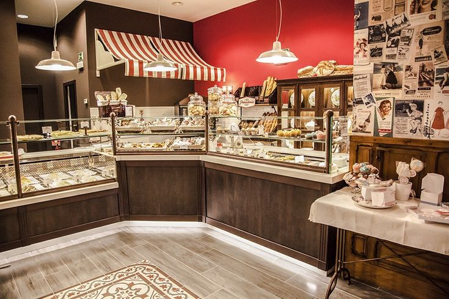

El Dulce Legado de la Pastelería "Deliciosa"
En el corazón de un pequeño pueblo llamado San Cristóbal, se erige una pastelería que ha sido testigo de generaciones enteras y que ha endulzado la vida de sus habitantes por más de cincuenta años. La pastelería "Deliciosa" no es solo un negocio, es un lugar lleno de recuerdos, tradición y sobre todo, de mucho amor por la repostería.
El Comienzo de un Sueño
Todo comenzó en 1970 cuando Doña Elena Rodríguez, una joven apasionada por la repostería, decidió seguir su sueño de abrir una pastelería. Con el apoyo de su esposo, Don Manuel, transformaron la cocina de su casa en un pequeño taller donde preparaban sus primeros pasteles y galletas. El aroma a vainilla y canela pronto llenó las calles cercanas, atrayendo a los primeros clientes.
Doña Elena tenía una habilidad especial para combinar sabores y crear recetas únicas. Su pastel de tres leches y sus empanadas de dulce de leche se convirtieron en leyenda. La calidad y el cariño que ponía en cada creación hicieron que "Deliciosa" ganara fama rápidamente. El negocio creció, y la cocina casera se convirtió en una pastelería con todas las de la ley.
La Expansión y el Legado
A lo largo de los años, "Deliciosa" no solo creció en tamaño, sino también en reputación. Los hijos de Doña Elena, Ana y Carlos, crecieron entre sacos de harina y moldes de pasteles. Ellos heredaron la pasión de su madre y aportaron nuevas ideas al negocio. Ana, con su talento para la decoración, introdujo diseños modernos y elegantes, mientras que Carlos, un experto en marketing, expandió la clientela con estrategias innovadoras.
La pastelería no solo vendía pasteles; también se convirtió en el lugar preferido para celebrar cumpleaños, bodas y cualquier ocasión especial. Las personas venían de pueblos cercanos solo para probar sus famosos pasteles de fruta y tartas de chocolate. "Deliciosa" se convirtió en un símbolo de celebración y alegría en San Cristóbal.
Innovación sin Perder la Tradición
Con el paso de los años, la pastelería "Deliciosa" se mantuvo al día con las tendencias sin perder su esencia tradicional. Introdujeron opciones veganas y sin gluten, atendiendo a las nuevas necesidades de sus clientes, pero siempre conservando el sabor y la calidad que los caracterizaba. Las nuevas generaciones, dirigidas por los nietos de Doña Elena, María y José, han llevado la pastelería al mundo digital con una exitosa tienda en línea y una activa presencia en redes sociales.
Un Futuro Brillante
Hoy en día, "Deliciosa" sigue siendo un pilar en la comunidad de San Cristóbal. Cada mañana, las puertas de la pastelería se abren con el mismo entusiasmo que hace cincuenta años. La familia Rodríguez ha mantenido viva la pasión y el amor por la repostería, asegurándose de que cada cliente que cruza la puerta se sienta como en casa.
Las historias de cumpleaños, bodas y celebraciones siguen escribiéndose con cada pastel que sale del horno. La pastelería "Deliciosa" es un ejemplo de cómo el trabajo duro, la dedicación y el amor por lo que se hace pueden crear un legado que perdura a través de los tiempos. Y así, con cada nueva generación, el dulce legado de Doña Elena continúa floreciendo, endulzando vidas y creando recuerdos inolvidables.